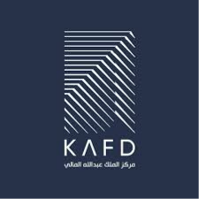
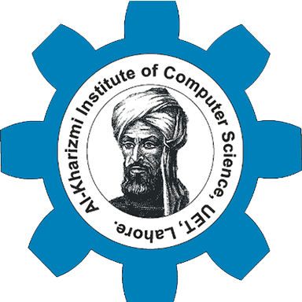

Automatic Security and Surveillance System for Video Streams
Low-latency serving, monitoring, and rollback for a domain-specific model used by thousands of daily users.
View case study →Team Lead · Software developer · Instructor · Immersive & intelligent systems
End-to-end development: APIs, training pipelines, inference services, WebXR clients, and the glue in between versioned, tested, and observable. Teaching is how I scale that craft to teams and classrooms.


I am a Team Lead and Senior AI & Machine Learning Engineer with over 6 years of experience designing, building, and deploying intelligent systems that solve complex, real-world problems at scale. My expertise spans the full ML lifecycle from data engineering and model development to production deployment and performance monitoring. I specialize in deep learning, natural language processing, and computer vision, with hands-on experience across frameworks including PyTorch, TensorFlow, and Hugging Face Transformers, and cloud platforms such as AWS, GCP, and Azure. Throughout my career, I have had the privilege of working on high-impact projects building recommendation engines, LLM-powered pipelines, and predictive analytics systems that have delivered measurable business outcomes. I am equally comfortable conducting applied research and translating that research into robust, production-grade solutions. Beyond the technical work, I am passionate about engineering excellence, cross-functional collaboration, and mentoring the next generation of ML practitioners. I believe the most meaningful AI systems are built not just with strong models, but with clarity of purpose, rigorous evaluation, and a commitment to responsible development. I am always open to connecting with professionals working at the intersection of AI, data, and product whether to exchange ideas, explore collaborations, or discuss opportunities.
REST and streaming APIs, typed SDKs, auth boundaries, and clear error contracts. Feature flags and backward-compatible versioning so mobile and XR clients can ship safely.
Training jobs, artifact registries, batch and online inference, latency budgets, drift checks, and dashboards operators actually open when something breaks.
Unity and WebXR builds, performance on-device, interaction feel, and telemetry hooks—so design and data teams get signal from real sessions.
Unit and integration tests where they matter, CI pipelines, containerized deploys, structured logging, and runbooks—so the team can iterate without fear.
Low-latency serving, monitoring, and rollback for a domain-specific model used by thousands of daily users.
View case study →Hand-tracked VR module for procedural training with analytics on completion and error patterns.
View case study →Hand-tracked VR module for procedural training with analytics on completion and error patterns.
View case study →Hand-tracked VR module for procedural training with analytics on completion and error patterns.
View case study →Hand-tracked VR module for procedural training with analytics on completion and error patterns.
View case study →RAG-backed assistant with citation UI, eval harness, and human-in-the-loop review for high-stakes answers.
View case study →▸ Contributing to national AI research across smart cities, healthcare diagnostics, and industrial automation. ▸ Advising on AI model architecture, deployment strategy, and research-to-product pipeline for NCAI projects. ▸ Collaborating with multi-disciplinary teams bridging academic research and real-world product delivery.
Jan 2026 – Present
▸ Leading a cross-functional team of engineers in AI/ML, AR/VR, and software development. ▸ Owning end-to-end project lifecycle: scoping, sprint planning, technical architecture, QA, and delivery. ▸ Driving spatial computing product strategy aligned with HawkLogix's commercial roadmap.
Aug 2023 – Present
▸ Managed concurrent delivery of AI, software, and AR/VR projects using Agile & Scrum methodologies. ▸ Ensured cross-team alignment on technical scope, timelines, and stakeholder communication.
Jan 2023 – Oct 2025
▸ Delivered computer vision and AR/VR solutions integrating Raspberry Pi edge hardware for industrial clients.
Sep 2022 – Dec 2023
▸ Developed and deployed AI/ML models for gaming and simulation use cases, including RL-based game AI.
Jan 2023 – Nov 2023
▸ Led AI engineering team; oversaw model development, training pipelines, and production deployment.
Aug 2022 – Jun 2023
I optimize for mental models: learners should leave able to debug, measure, and explain—not just run notebooks.
Hiring, guest lectures, or immersive / ML consulting—say hello.